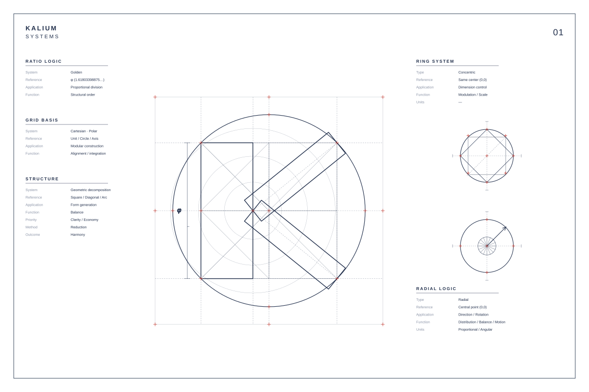
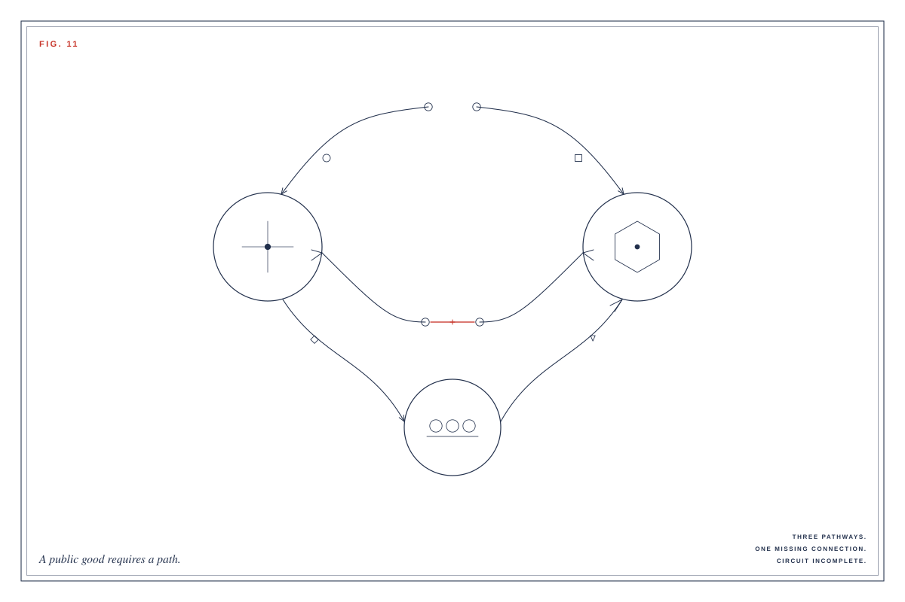
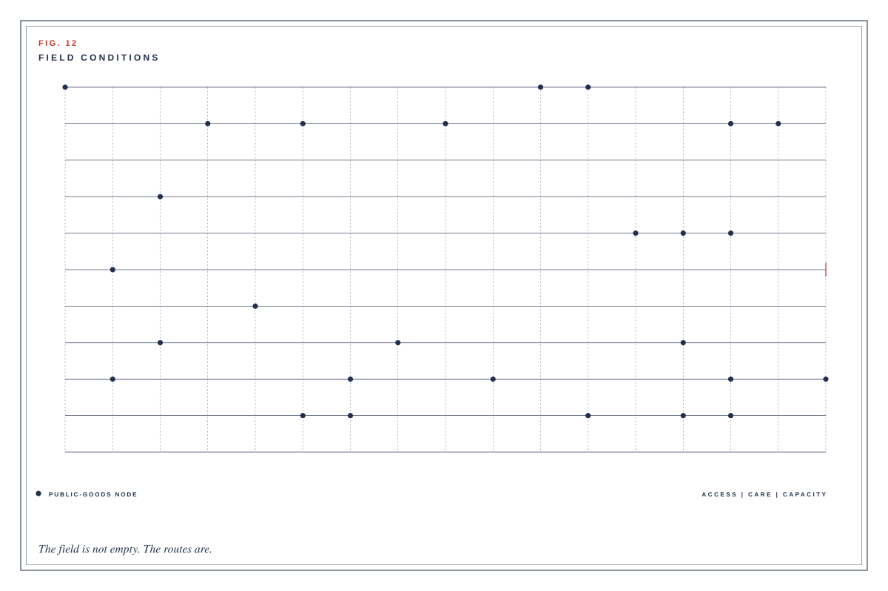
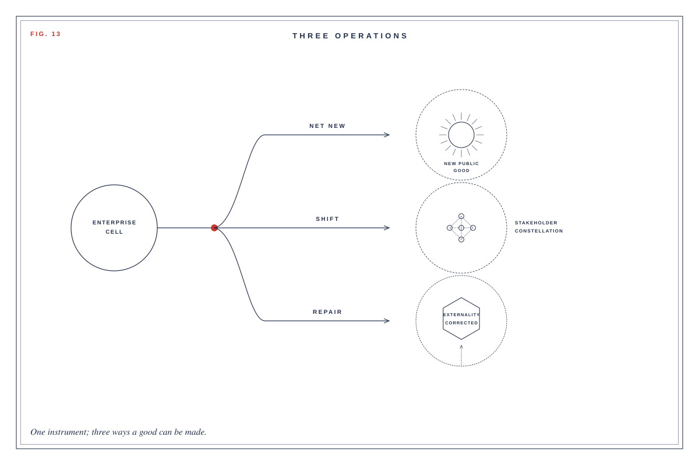
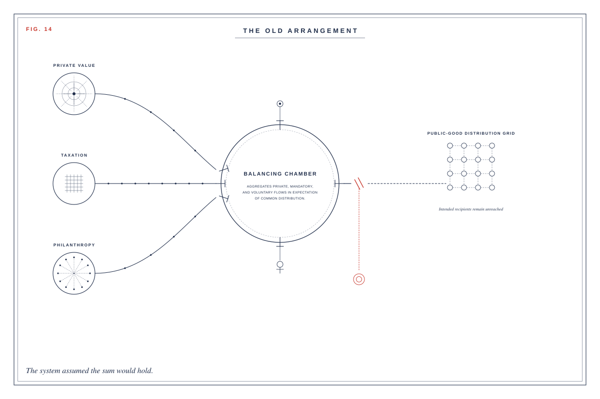
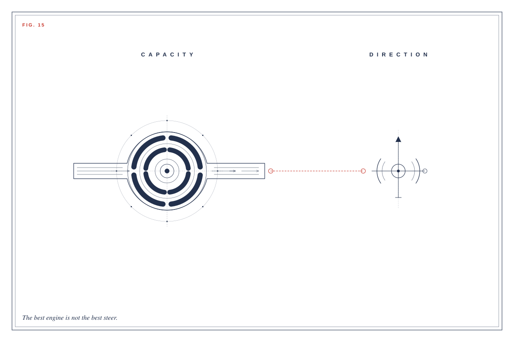
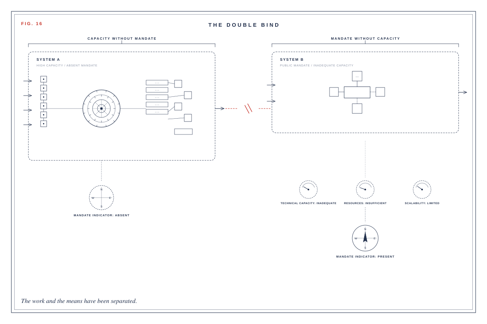
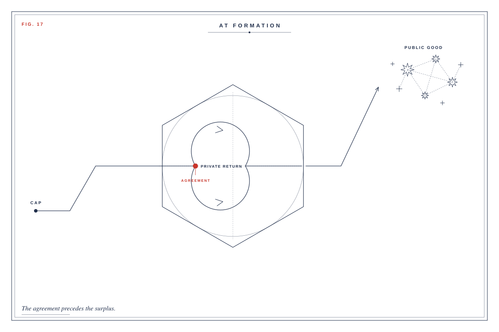

Diagrams
Construction plates and theme diagrams for the white paper.
-

Fig. 01 Mark construction / Kalium Systems -

Fig. 11 Missing circuit -

Fig. 12 Field conditions -

Fig. 13 Three operations -

Fig. 14 The old arrangement -

Fig. 15 Engine and steering -

Fig. 16 The double bind -

Fig. 17 At formation